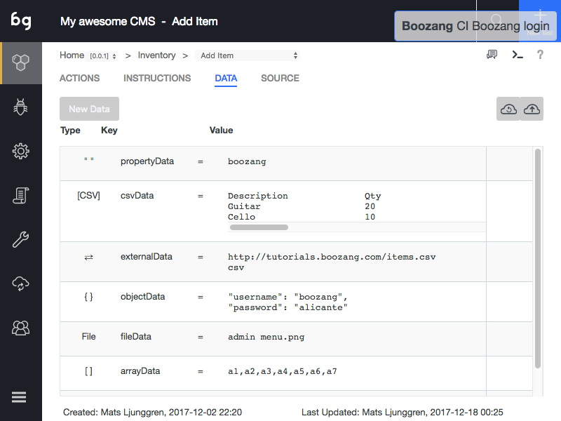

Data types

Introduction to data types
Boozang supports a number of different data types: Property, Object, Array, CSV, File, Request data and JS (Javascript function).
Properties
The property is a simple name-value pair and can be referenced directly. For instance, a property username = boozang added on test-level, can be referenced {{$test.username}} (=boozang). Pro-tip: You can verify this in execution by printing it to your application console window by creating the following Javascript action $TW.console.log($test.username).
Objects
Objects in Boozang are the one-level sub-set of JSON objects and are ideal for grouping related data together. For instance, create the Object loginInfo and add username = boozang and password = p@ssw0rd. The data can be referenced by typing {{$test.loginInfo.username}} and {{$test.loginInfo.password}}.
Array
The arrays are rarely used but can be useful in Javascript functions, especially for advanced users.
CSV data
CSV data allows you to handle a large collection of Objects and copy data from software such as Excel. Simply create a name for the collection, such as inventoryItems. Start by adding the field names as headings separated by tab-spaces. When you are done defining the data hit Enter and fill out the values tab separated. Pro-tip: You can copy a whole table from Excel simply by using copy-paste.
File data
File data is used to test file upload and similar user interactions. Try and use small sample files as large files tends to weight down on the test client, consuming memory or slowing down performance. It is also recommended to fetch files from an external source (see Request Data).
Request Data
It is also possible to fetch data from an external source. Simply type in a URL and choose CSV, JSON or File. The CSV file should be comma-separated (field1name1, fieldname2, \n value1, value2) and not tab-separated.
JS (Javascript functions)
It is also possible to specify Javascript functions directly. The functions can be in two forms: Date.now() or fining the data hit Enter and fill out the values tab separated. Pro-tip: You can copy a whole table from Excel simply by using copy-paste.
File data
File data is used to test file upload and similar user interactions. Try and use small sample files as large files tends to weight down on the test client, consuming memory or slowing down performance. It is also recommeded to fecth files from an external source (see Request Data).
Request Data
It is also possible to fetch data from an external source. Simply type in a URL and choose CSV, JSON or File. The CSV file should be comma-separated (field1name1, fieldname2, \n value1, value2) and not tab-separated.
JS (Javascript functions)
It is also possible to specify Javascript functions directly. The functions can be in two forms: Date.now() or